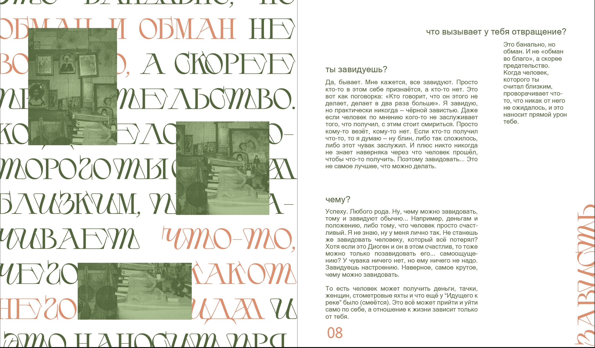
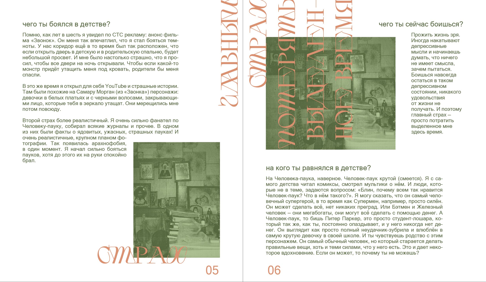

Проект иллюстрированной книги интервью "Инаковость"
Сборник "Инаковость" представляет собой серию интервью с различными уникальными личностями, включая художников и музыкантов, в различных проявлениях их творчества. Цель данного сборника - показать этих людей с уникальной стороны, раскрывая интересные и неочевидные аспекты их личности, не прибегая к штампам или стереотипам. Читатели получат возможность вглядеться в их мысли, вдохновение, творческий процесс, и узнать о них больше, чем просто информацию о их карьере или достижениях. "Инаковость" приглашает читателей на уникальное путешествие в мир искусства, где каждая личность откроется в новом, увлекательном свете.
 - Это книга, не меняющая мировоззрение, она не формирует целостное видение мира и не дает ответы на вопросы о смысле человеческой жизни.
- По опросам общественного мнения эта книга ничего в их жизни не поменяла.
- Эта книга пока не попала в список бестселлеров The New York Times.
- Это самое значимое произведение в жизни писательницы, на работу над которым ушел 1 год ее студенчнской жизни.